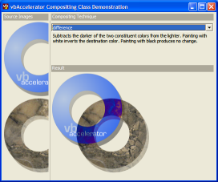

VB5 Compositing Sample (109K)
VB5 Compositing Sample (109K)
 Bugs: 1 / 1
Bugs: 1 / 1
 Issues: 0 / 0
Issues: 0 / 0
 Questions: 0 / 0
Questions: 0 / 0
 5 Sep 2003
5 Sep 2003
First Posted

Compositing Operations
Create sophisticated blended displays using images with alpha.
There are various ways of combining two images together, particularly when either or both of the two images contain alpha channels. As the real-time video-effects industry has developed, twelve standard compositing techniques, know as the Porter-Duff Compositing Operations, have emerged. In addition, many image processing application support other useful operations, such as "Burn" and "Hard-Light". GDI and GDI+ provide very limited support for compositing operations, so this article demonstrates how to perform them using VB code.
About Compositing
A compositing operation refers to the way in which the pixels from one image, known as the source, are combined with another, known as the destination to produce the final result. Any compositing operation can be described in terms of the source and destination pixel colours and alpha values.
The following section describes the 24 operations which are demonstrated in the download code. The following key is used:
Sc - The source element color value.
Sa - The source element alpha value.
Dc - The canvas color value prior to compositing.
Da - The canvas alpha value prior to compositing.
Dc' - The canvas color value post compositing.
Da' - The canvas alpha value post compositing.
All colours must be pre-multiplied by their alpha value prior to performing the calculations, and the equations are shown with colour and alpha values normalized between 0 and 1. In reality, the values run from 0 to 255, and therefore (for example) (1 - Sa) would actually be ((255 - Sa)/255). Finally, although colour values are represented using a single symbol (Sc, Dc or Dc') each colour actually consists of three independent R,G,B components and the calculation needs to be performed individually for each component.
Note: The source of this information was the W3C SVG draft specification.
Porter-Duff Compositing Operations
- clear
Both the color and the alpha of the destination are cleared. Neither the source nor the destination are used as input.
Dc' = 0 Da' = 0
- src
The source is copied to the destination. The destination is not used as input.
Dc' = Sc.Da + Sc.(1 - Da) = Sc Da' = Sa.Da + Sa.(1 - Da) = Sa
- dst
The destination is left untouched.
Dc' = Dc.Sa + Dc.(1 - Sa) = Dc Da' = Da.Sa + Da.(1 - Sa) = Da
- src_over
The source is composited over the destination.
Dc' = Sc.Da + Sc.(1 - Da) + Dc.(1 - Sa) = Sc + Dc.(1 - Sa) Da' = Sa.Da + Sa.(1 - Da) + Da.(1 - Sa) = Sa + Da - Sa.Da
- dst_over
The destination is composited over the source and the result replaces the destination.
Dc' = Dc.Sa + Sc.(1 - Da) + Dc.(1 - Sa) = Dc + Sc.(1 - Da) Da' = Da.Sa + Sa.(1 - Da) + Da.(1 - Sa) = Sa + Da - Sa.Da
- src_in
The part of the source lying inside of the destination replaces the destination.
Dc' = Sc.Da Da' = Sa.Da
- src_out
The part of the source lying outside of the destination replaces the destination.
Dc' = Sc.(1 - Da) Da' = Sa.(1 - Da)
- dst_out
The part of the destination lying outside of the source replaces the destination.
Dc' = Dc.(1 - Sa) Da' = Da.(1 - Sa)
- src_atop
The part of the source lying inside of the destination is composited onto the destination.
Dc' = Sc.Da + Dc(1 - Sa) Da' = Sa.Da + Da(1 - Sa) = Da
- dst_atop
The part of the destination lying inside of the source is composited over the source and replaces the destination.
Dc' = Dc.Sa + Sc.(1 - Da) Da' = Da.Sa + Sa.(1 - Da) = Sa
- xor
The part of the source that lies outside of the destination is combined with the part of the destination that lies outside of the source.
Dc' = Sc.(1 - Da) + Dc.(1 - Sa) Da' = Sa.(1 - Da) + Da.(1 - Sa) = Sa + Da - 2.Sa.Da
Extended Compositing Operations
Note that the colour and alpha values in the extended operations need to be clamped to ensure they don't exceed the 0-255 value range.
- plus
The source is added to the destination and replaces the destination. This operator is useful for animating a dissolve between two images.
Dc' = Sc.Da + Dc.Sa + Sc.(1 - Da) + Dc.(1 - Sa) = Sc + Dc Da' = Sa.Da + Da.Sa + Sa.(1 - Da) + Da.(1 - Sa) = Sa + Da - multiply
The source is multiplied by the destination and replaces the destination. The resultant color is always at least as dark as either of the two constituent colors. Multiplying any color with black produces black. Multiplying any color with white leaves the original color unchanged.
Dc' = Sc.Dc + Sc.(1 - Da) + Dc.(1 - Sa) Da' = Sa.Da + Sa.(1 - Da) + Da.(1 - Sa) = Sa + Da - Sa.Da
- screen
The source and destination are complemented and then multiplied and then replace the destination. The resultant color is always at least as light as either of the two constituent colors. Screening any color with white produces white. Screening any color with black leaves the original color unchanged.
Dc' = (Sa.Da - (Da - Dc).(Sa - Sc)) + Sc.(1 - Da) + Dc.(1 - Sa) = (Sc.Da + Dc.Sa - Sc.Dc) + Sc.(1 - Da) + Dc.(1 - Sa) = Sc + Dc - Sc.Dc Da' = Sa + Da - Sa.Da
- overlay
Multiplies or screens the colors, dependent on the destination color. Source colors overlay the destination whilst preserving its highlights and shadows. The destination color is not replaced, but is mixed with the source color to reflect the lightness or darkness of the destination.
if 2.Dc < Da Dc' = 2.Sc.Dc + Sc.(1 - Da) + Dc.(1 - Sa) otherwise Dc' = Sa.Da - 2.(Da - Dc).(Sa - Sc) + Sc.(1 - Da) + Dc.(1 - Sa) Da' = Sa + Da - Sa.Da
- darken
Selects the darker of the destination and source colors. The destination is replaced with the source when the source is darker, otherwise it is left unchanged.
Dc' = min(Sc.Da, Dc.Sa) + Sc.(1 - Da) + Dc.(1 - Sa) Da' = Sa + Da - Sa.Da or if Sc.Da < Dc.Sa src_over() otherwise dst_over()
- lighten
Selects the lighter of the destination and source colors. The destination is replaced with the source when the source is lighter, otherwise it is left unchanged.
Dc' = max(Sc.Da, Dc.Sa) + Sc.(1 - Da) + Dc.(1 - Sa) Da' = Sa + Da - Sa.Da or if Sc.Da > Dc.Sa src_over() otherwise dst_over()
- color_dodge
Brightens the destination color to reflect the source color. Painting with black produces no change.
if Sc.Da + Dc.Sa >= Sa.Da Dc' = Sa.Da + Sc.(1 - Da) + Dc.(1 - Sa) otherwise Dc' = Dc.Sa/(1-Sc/Sa) + Sc.(1 - Da) + Dc.(1 - Sa) Da' = Sa + Da - Sa.Da
- color_burn
Darkens the destination color to reflect the source color. Painting with white produces no change.
if Sc.Da + Dc.Sa <= Sa.Da Dc' = Sc.(1 - Da) + Dc.(1 - Sa) otherwise Dc' = Sa.(Sc.Da + Dc.Sa - Sa.Da)/Sc + Sc.(1 - Da) + Dc.(1 - Sa) Da' = Sa + Da - Sa.Da
- hard_light
Multiplies or screens the colors, dependent on the source color value. If the source color is lighter than 0.5, the destination is lightened as if it were screened. If the source color is darker than 0.5, the destination is darkened, as if it were multiplied. The degree of lightening or darkening is proportional to the difference between the source color and 0.5. If it is equal to 0.5 the destination is unchanged. Painting with pure black or white produces black or white.
if 2.Sc < Sa Dc' = 2.Sc.Dc + Sc.(1 - Da) + Dc.(1 - Sa) otherwise Dc' = Sa.Da - 2.(Da - Dc).(Sa - Sc) + Sc.(1 - Da) + Dc.(1 - Sa) Da' = Sa + Da - Sa.Da
- soft_light
Darkens or lightens the colors, dependent on the source color value. If the source color is lighter than 0.5, the destination is lightened. If the source color is darker than 0.5, the destination is darkened, as if it were burned in. The degree of darkening or lightening is proportional to the difference between the source color and 0.5. If it is equal to 0.5, the destination is unchanged. Painting with pure black or white produces a distinctly darker or lighter area, but does not result in pure black or white.
if 2.Sc < Sa Dc' = Dc.(Sa - (1 - Dc/Da).(2.Sc - Sa)) + Sc.(1 - Da) + Dc.(1 - Sa) otherwise if Dc.8 <= Da Dc' = Dc.(Sa - (1 - Dc/Da).(2.Sc - Sa).(3 - 8.Dc/Da)) + Sc.(1 - Da) + Dc.(1 - Sa) otherwise Dc' = (Dc.Sa + ((Dc/Da)^(0.5).Da - Dc).(2.Sc - Sa)) + Sc.(1 - Da) + Dc.(1 - Sa) Da' = Sa + Da - Sa.Da
- difference
Subtracts the darker of the two constituent colors from the lighter. Painting with white inverts the destination color. Painting with black produces no change.
Dc' = abs(Dc.Sa - Sc.Da) + Sc.(1 - Da) + Dc.(1 - Sa) = Sc + Dc - 2.min(Sc.Da, Dc.Sa) Da' = Sa + Da - Sa.Da
- exclusion
Produces an effect similar to that of 'difference', but appears as lower contrast. Painting with white inverts the destination color. Painting with black produces no change.
Dc' = (Sc.Da + Dc.Sa - 2.Sc.Dc) + Sc.(1 - Da) + Dc.(1 - Sa) Da' = Sa + Da - Sa.Da
Compositing Support in GDI and GDI+
The only support for compositing which takes into account the alpha channel in GDI is the AlphaBlend function. Provided the source image is 32 bits/pixel, then setting the BLENDFUNCTION parameter AlphaFormat member set to AC_SRC_ALPHA performs the src_over compositing method.
GDI+ provides a CompositingMode setting which determines how two images are combined. The available compositing options are CompositingModeSourceCopy and CompositingModeSourceOver.
Implementing the Compositing Operations
In order to implement these algorithms, two things are needed:
- An image source which holds per-alpha pixel.
- The pixel colour and alpha values need to be read/write.
An Alpha DIBSections meets both of these requirements and is used for this sample. To see how a typical operation is implemented, consider the src_atop Porter-Duff operation. In this operation, pixels inside the destination are composited onto the destination. (The concept of "inside" here is based on what happens on the screen. Pixels which are transparent are regarded as "outside" whilst those that are opaque or translucent are "inside").
The equation for this operation is as follows:
Dc' = Sc.Da + Dc(1 - Sa)
Da' = Sa.Da + Da(1 - Sa)
= Da
So to implement we need two DIBSections: a source, and a destination. Then each pixel is considered in the source and destination and the calculation performed. If the two DIBSections are not identically sized, then only the area that is overlapped between the two can be considered.
As noted in the True Colour DIBSection article, COM provides a technique whereby any buffer of memory can be made to look like a Visual Basic array. This allows the pixel values to be read very quickly at the expense of some slightly more complex code to create the array:
Private Declare Sub CopyMemory Lib "kernel32" Alias "RtlMoveMemory" ( _
lpvDest As Any, lpvSource As Any, ByVal cbCopy As Long)
Private Type SAFEARRAYBOUND
cElements As Long
lLbound As Long
End Type
Private Type SAFEARRAY2D
cDims As Integer
fFeatures As Integer
cbElements As Long
cLocks As Long
pvData As Long
Bounds(0 To 1) As SAFEARRAYBOUND
End Type
Private Declare Function VarPtrArray Lib "msvbvm60.dll" Alias "VarPtr" _
(Ptr() As Any) As Long
...
Dim bDib() as Byte
Dim tSA As SAFEARRAY2D
With tSA
.cbElements = 1
.cDims = 2
.Bounds(0).lLbound = 0
.Bounds(0).cElements = Height
.Bounds(1).lLbound = 0
.Bounds(1).cElements = BytesPerScanLine
.pvData = Ptr ' Pointer to DIB section memory
End With
CopyMemory ByVal VarPtrArray(bDib()), VarPtr(tSA), 4
Casting a buffer of memory to a 2D array
The code below shows how the calculation is performed on the individual bytes. Note that whenever two values are multiplied together, it is necessary to divide by 255 to ensure the result is still in range, and the use of long values to prevent overflows during the intermediate calculations.
' Loop through each value in x, 4 bytes at a time.
' 4 bytes = B,G,R,A
For x = srcX To xEnd Step 4
' Loop through each value in y. Note that a DIB
' is usually upside down, so y = 0 is the last row
' and y = height - 1 is the first.
For y = srcY To yEnd
' Dc' = Sc.Da + Dc(1 - Sa)
' Calculate the new red value:
lR = (bDib(x + 2, y) * 1& * bDibDst(x + 3, y)) / 255& + _
bDibDst(x + 2, y) * (255& - bDib(x + 3, y)) / 255&
' Set the new red value:
bDibDst(x + 2, y) = lR
' Calculate the new green value:
lG = (bDib(x + 1, y) * 1& * bDibDst(x + 3, y)) / 255& + _
bDibDst(x + 1, y) * (255& - bDib(x + 3, y)) / 255&
bDibDst(x + 1, y) = lG
' Calculate the new blue value:
lB = (bDib(x, y) * 1& * bDibDst(x + 3, y)) / 255& + _
bDibDst(x, y) * (255& - bDib(x + 3, y)) / 255&
bDibDst(x, y) = lB
' Da ' = Sa.Da + Da(1 - Sa)
' = Da
' no change in alpha
Next y
Next x
The cCompositing Class
The cCompositing class provided with the download provides implementations for all of the compositing operations described above and a simple interface to access them.
To use the class, create an instance of it, and then perform these steps:
- Configure the source and
destination AlphaDIBSection objects to composite.
This is done by setting the Src and Dst properties to a AlphaDIBSection instances. Remember that the destination will normally be modified by the operation. - (Optional) Configure the area of the source you want to consider
By default the class will perform compositing on the area starting at (0,0) up to the largest shared width and height of the source and destination images. However, you can configure the source start coordinate using SrcX and SrcY and the desired size to use with SrcWidth and SrcHeight. - Set the Operation to perform
The Operation property takes one of the 24 compositing operations specified in the CompositingOperations enumeration. - Combine the images using the Composite method.
The demonstration application provided with the download provides a simple UI which demonstrates each of the compositing operations.
All of these operations can be further enhanced by providing a parameterised alpha adjustment to the operation that's being performed. To do this, you just need to adjust all alpha values in the source and/or destination by a constant percentage. This technique is used (for example) in Paint Shop Pro to allow different layers in an Image to be combined in different creative ways.
Conclusion
This article has described a rich set of compositing techniques and demonstrates how to perform each of them with reusable VB code.